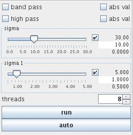

|
|
|
computes convolution with a Gaussian kernel(s) outputting low pass and (optionally) high pass and band pass data
| input port | type | description | data acceptors |
|---|---|---|---|
| inField | VNRegularField | ||
| output port | type | description | data schemas |
| outField | VNRegularField |
GAUSSIAN SMOOTHING
The module convolves an input field with Gaussian kernels producing low pass and optionally high pass and band pass output.
Input data
The input field is regular.
Output data
The output field is regular.
Computation parameters
